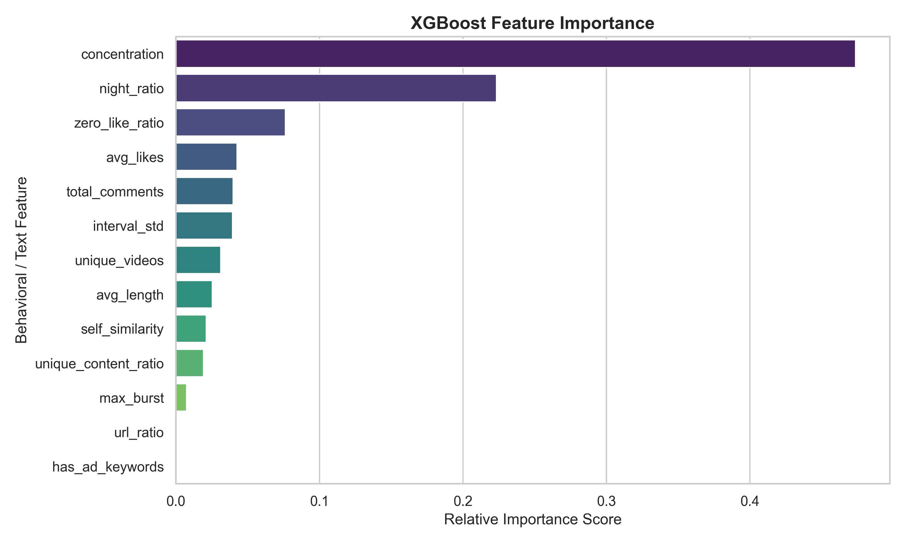
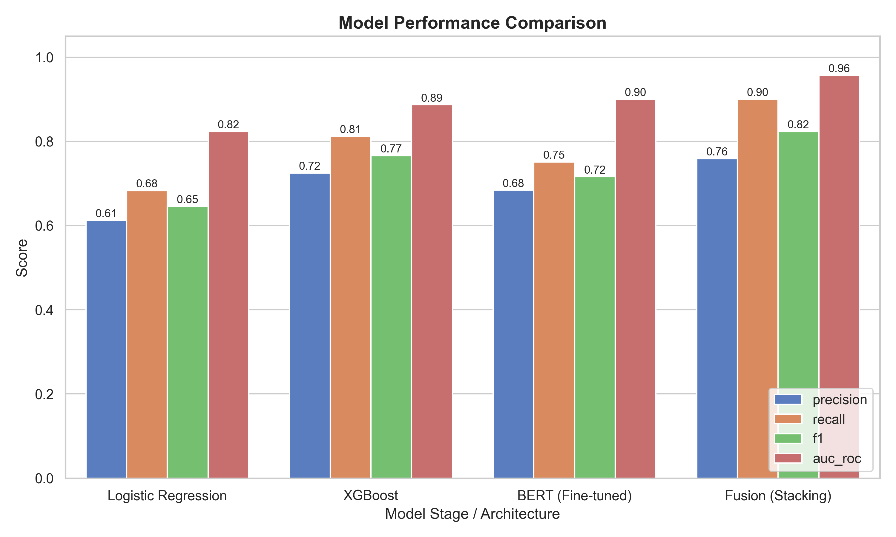
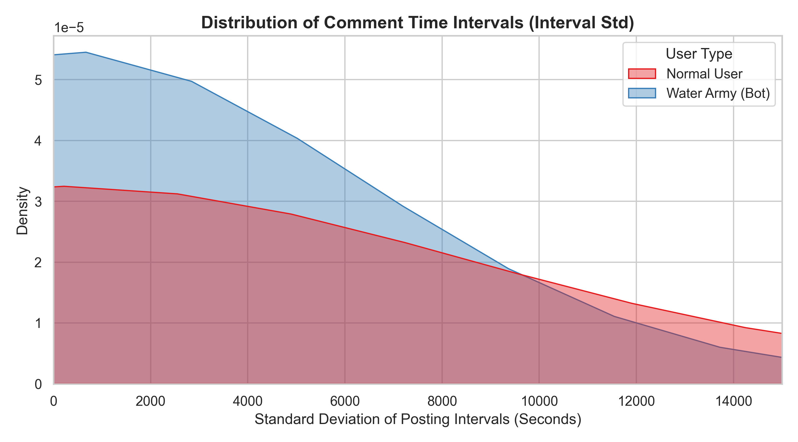
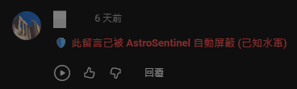

1. 問題與動機
社群媒體平台上的「水軍」(Astroturfing) 行為透過機器人帳號、付費評論與協同操控，系統性地扭曲公共輿論。
- 極度氾濫：YouTube 繁體中文政論頻道留言區已成為水軍活動的重災區。
- 傳統審查失效：現有內容審查機制難以有效辨識經過偽裝的高級水軍。
- 解決方案：AstroSentinel 透過行為、內容、時間三個維度，結合傳統機器學習與深度學習，打造高準確率的自動化偵測屏障。
2. 動態標注與特徵工程
為了解決標記資料匱乏的問題，我們採用了 Agent Worker Pool (動態子代理池) 架構，驅動大語言模型 (LLM) 自動化完成 4.3 萬名用戶的標注，並萃取出 13 項關鍵維度特徵：
行為維度 (Behavior)
零讚留言比例
單一影片集中度
跨影片數量
單一影片集中度
跨影片數量
內容維度 (Content)
自我留言相似度 (TF-IDF)
垃圾連結比例
廣告關鍵字特徵
垃圾連結比例
廣告關鍵字特徵
時間維度 (Temporal)
深夜留言比例
留言時間間隔標準差
爆發性發文次數
留言時間間隔標準差
爆發性發文次數

圖一：XGBoost 模型對於各項水軍特徵的重要性排序分析
5. 實驗成果 (Evaluation)
在 4.3 萬名使用者的測試集中，最終的 Fusion 模型達到了驚人的分類表現，徹底碾壓單一模型：

圖三：各階段模型在 Precision, Recall, F1 與 ROC-AUC 的綜合表現對比
- ROC-AUC 高達 0.95：展現了近乎完美的真假水軍分類能力。
- 召回率 (Recall) 達 90%：極大化降低了漏網之魚的發生率。
3. 留言間隔分析 (Time Interval)
追蹤每位用戶連續留言的時間間隔，發現水軍呈現出極度集中且短促的非人類頻率，這成為判斷其為自動化程式的核心依據。

圖二：水軍 (Bot) 與一般使用者 (Normal) 的發文間隔分佈差異
4. 三階段訓練管線 (Training Pipeline)
我們設計了階段式的訓練管線，將運算資源與特徵優勢最大化：
4.3萬筆用戶特徵與留言
↓
第一階段: XGBoost
高維度行為數值特徵
高維度行為數值特徵
第二階段: MacBERT
繁體中文語意與模板
繁體中文語意與模板
↘ ↙
第三階段: Stacking Fusion
機率融合，消除盲區
機率融合，消除盲區
↓
最終水軍預測結果
- 第一階段 (XGBoost)：專注於高維度的數值與行為特徵，具備極高的訓練效率。
- 第二階段 (MacBERT)：專注於繁體中文語意理解，捕捉格式化模板與異常言論。
- 第三階段 (Fusion)：透過 Stacking 技術融合兩者預測機率，消除單一模型的盲區。
6. 結論與應用部署 (Deployment)
本研究不僅在理論上填補了繁體中文 YouTube 水軍偵測的空白，更開發了實際的應用落地：

圖四：Chrome 擴充功能即時屏蔽水軍之實測畫面
- 無痛部署：透過 FastAPI 建構超高速記憶體字典 API。
- Chrome 擴充功能：開發者與一般民眾可直接安裝 AstroSentinel 插件，在 YouTube 留言區即時屏蔽已知網軍，實現「網頁端防護罩」。
7. 致謝
本專題由國立高雄科技大學教務處教學發展中心計畫支持，計畫名稱為：專題式學習。